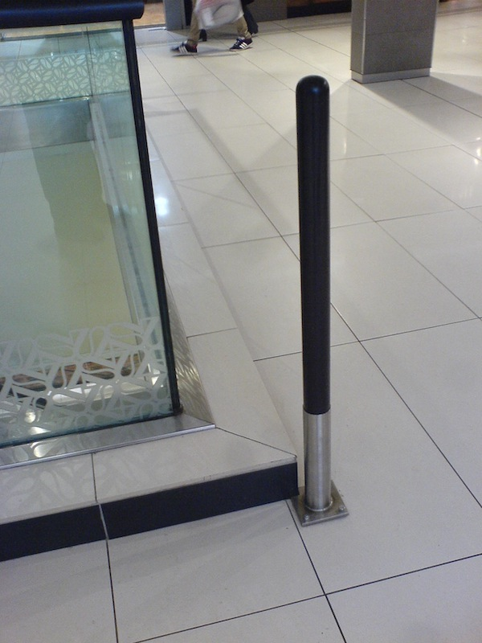
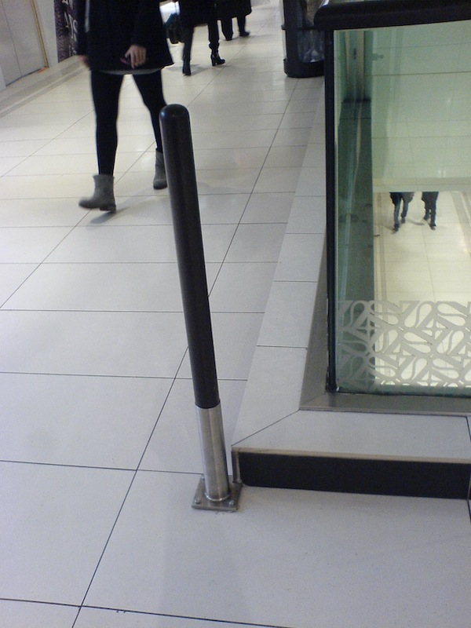
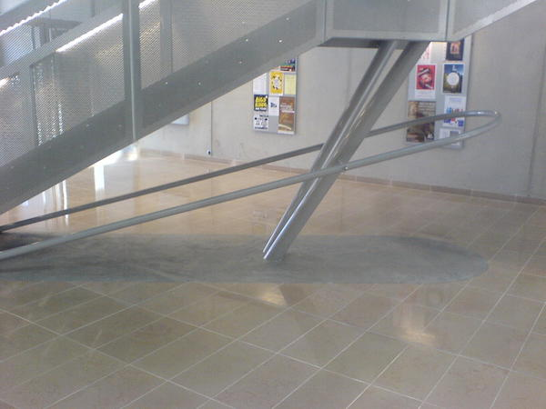

Paris, Place d’Italie, Feb 9, 2015. Image credit: RC.
Remediation design is becoming a significant part of the design landscape. In this highly frequented mall in Paris, color contrast was not enough. Now, of course, we must avoid the pole. Here we can almost see the history of the process, step after step, incident after incident. It looks like trial and error. Who paid the costs?

Maison des sciences de l’homme, Dijon, Apr 7, 2015. Image credit: RC.
In Dijon we see instead that the remediation is integrated in the process, merging with prevention (check the sleek design of the rail, the footprint of the stair: they all speak of a “design style”.) Real prevention, of course, is a totally different business: do not build a staircase that works like a barrier against intuitive crowd flows.
So an interesting category surfaces here: preventive remediation. It covers cases in which it was clear from the onset that the planned solution had problems, but rather than addressing the problem (move the staircase somewhere else), it was decided to mitigate its consequences. Looking at the sleek rail, we know that the staircase designers knew that the staircase was not optimal.
See the staircase in context
Mind it: preventive remediation is not prevention
Chapter 2: Prevention is Remediation to Remediation